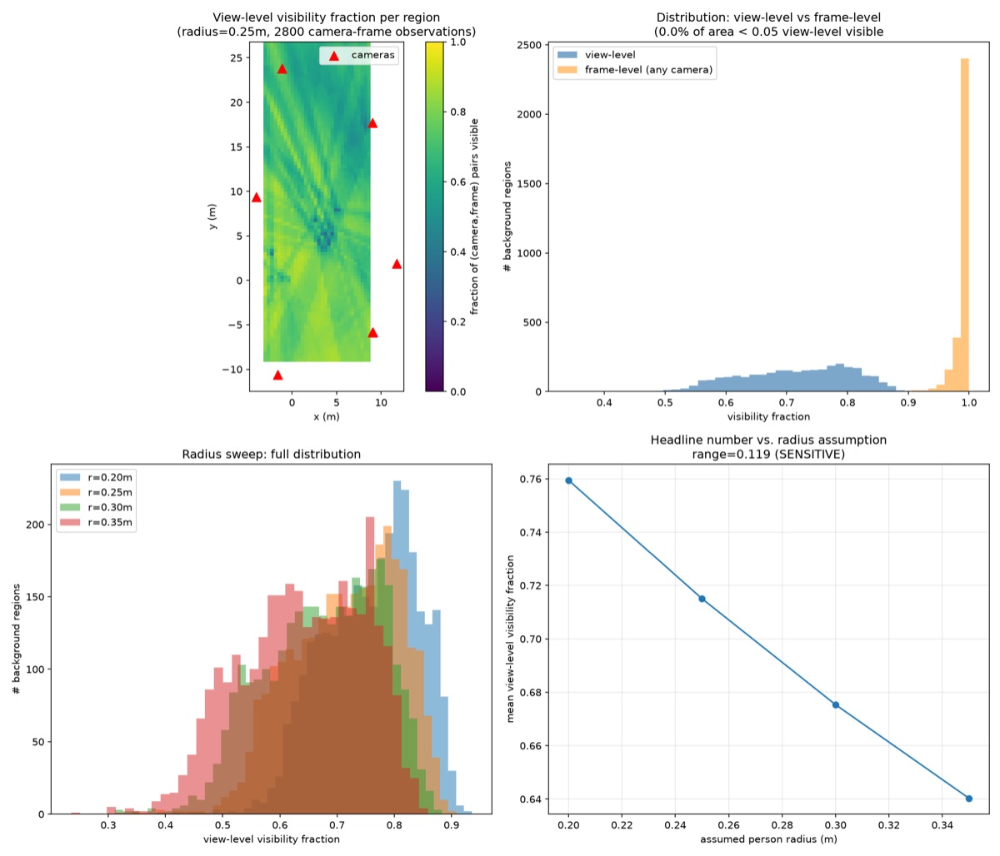
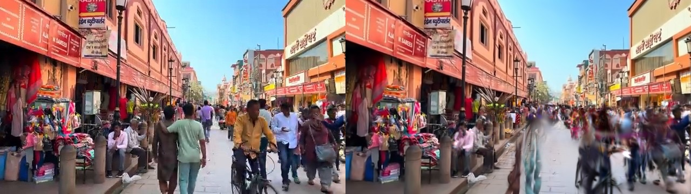
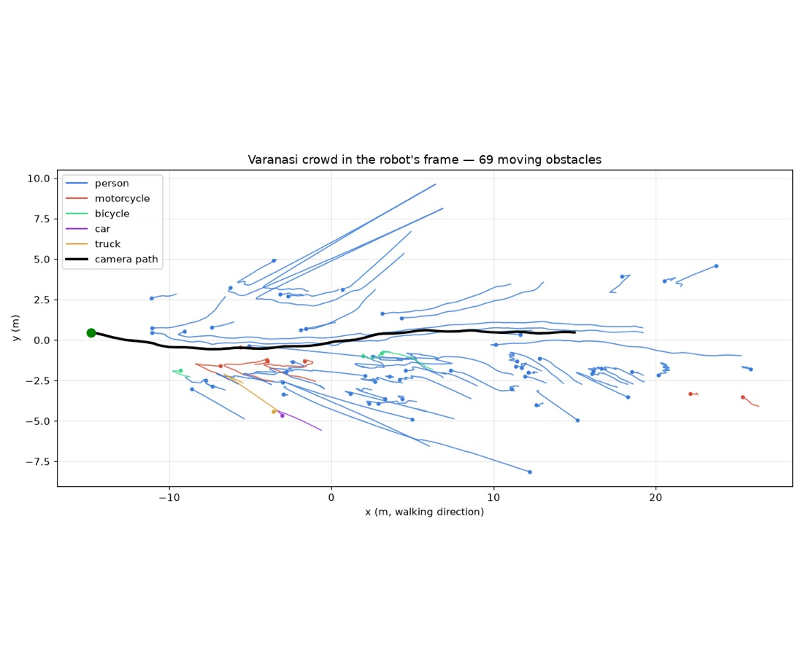
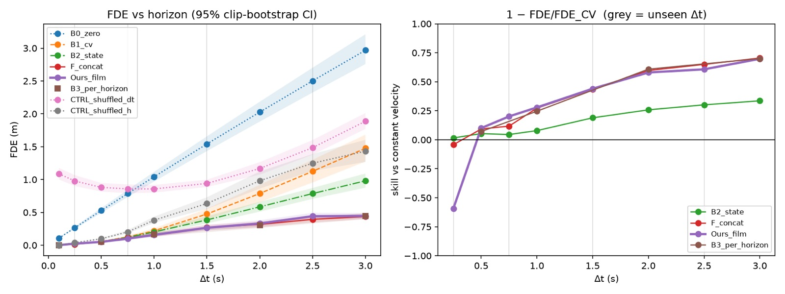
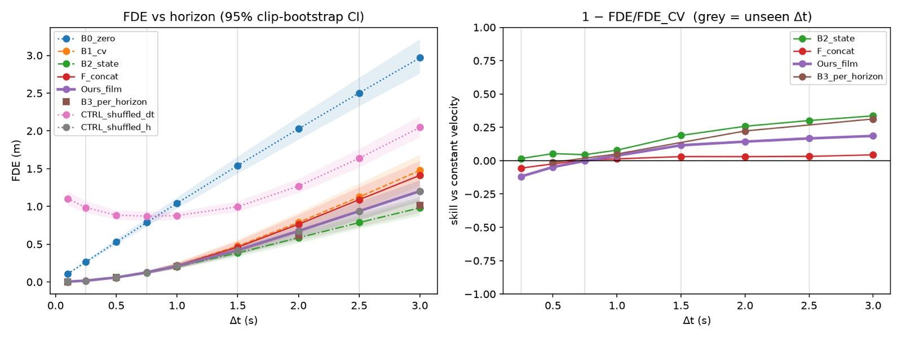

DenseWalk progress
Crowd video to Gaussian-splat street, then a simulated Unitree G1 walking through it. This page collects every result that was saved to the Mac before the GPU box was lost.
- 1Setupdone
- 23DGS static backgrounddone · AV2 + Varanasi
- 34D crowd reconstructionpartial
- 4360 panoramic rendernot started
- 5G1 locomotiondone
- 6G1 navigation in splat scenefirst run done
AV2 static background, Pittsburgh
An 83 m street built from 4 spatial chunks of 2.2M Gaussians each (8.8M total). Stack: gsplat 1.5.3 with 3DGUT, MCMC densification, SAM2 masks on moving objects, lidar initialisation, L1 + D-SSIM loss.

Varanasi market clip
361 frames at 640×360 from a single forward walk through a dense market. COLMAP SfM, a masked static-background splat, and 69 tracked agents placed in a metric world.


G1 locomotion on flat ground
Isaac Lab ships no pretrained G1 policy, so one was trained from scratch: 1500 iterations, mean reward 28.09. The policy is saved at outputs/g1_policy/{policy.onnx, model_1499.pt} and should be reused, not retrained.
G1 walking through the Varanasi crowd
The G1 walks in Isaac Sim on a fitted ground-plane collider. The splat is for visuals only and is never a collider. Tracked people replay at corrected speed. Best run is m4_run8.json, 40 s of simulation.

| Run | Walked | Left to goal | Closest | Hits |
|---|---|---|---|---|
| run | 18.7 m | 16.0 m | 0.99 m | 0 |
| run6 | 8.9 m | 29.6 m | 1.09 m | 0 |
| run8 | 35.9 m | 0.53 m | 1.84 m | 0 |
Larger videos, kept on the Mac only (each is 15–24 MB): m4_final_crowd_walk.mp4, m4_g1_fpv_street.mp4, m4_g1_in_varanasi.mp4, m4_g1_walk_sidebyside.mp4 in outputs/varanasi/.
Forecasting horizon on the Cosmos3-Nano DCA model
real-data run lostGoal: predict where the walker will be Δt seconds ahead, conditioned on Δt, using the fine-tuned model's 4096-d last-token hidden state. The model predicts the walker's own action and nearest-obstacle distance, not per-object tracks.
Existing V2_full checkpoint, test set of 50 clips / 2655 frames
| Variant | Macro-F1 | Mode acc. | Unsafe go ↓ | Vel. MAE ↓ | Obstacle AUC | Proximity R² |
|---|---|---|---|---|---|---|
| dca_full | 0.289 | 0.610 | 0.562 | 0.501 | 0.697 | 0.177 |
| lora_only | 0.260 | 0.591 | 0.562 | 0.515 | 0.942 | 0.676 |
| lora_unsafe | 0.262 | 0.579 | 0.606 | 0.594 | 0.945 | 0.711 |
| lora_unsafe_prior | 0.305 | 0.586 | 0.606 | 0.530 | 0.934 | −1.457 |
The DCA gate improves action metrics a little but gives up most of the LoRA variants' obstacle sensing. All variants still let through more than half of unsafe "go" decisions.
Real-data kinematic baselines (constant velocity, final displacement error)
| Horizon | 0.5 s | 1 s | 2 s | 3 s |
|---|---|---|---|---|
| Constant velocity | 0.115 m | 0.297 m | 0.708 m | 1.191 m |
A model that sees only the current state beats constant velocity by just 8% at 3 s, so there isn't much room for the latent to add value. Keyframes are 6 Hz, so Δt = 0.1 s can't be labelled on real data.
Pipeline sanity check on synthetic data


- passClose to constant velocity at the shortest Δt
- passSkill rises with horizon
- passBeats the state-only model beyond its CI (signal run)
- passShuffling Δt hurts
- passShuffling the latent removes the gain
- passGain concentrated on events
What's next
- Re-extract DCA features on a new instance, then run the Δt horizon experiment on real data.
- Walkable surface: use the fitted ground plane, or mark never-seen regions as unknown. Don't use the crowd-smeared splat surface.
- 360 panoramic render (stage 4), not started.
- People back in the scene as avatars (Human3R SMPL-X + 3DGS-Avatar), then trajectory forecasting and crowd-aware navigation.
- Re-download the AV2 sequence from its public S3 bucket if AV2 work continues. The SAM2 masks can be regenerated.